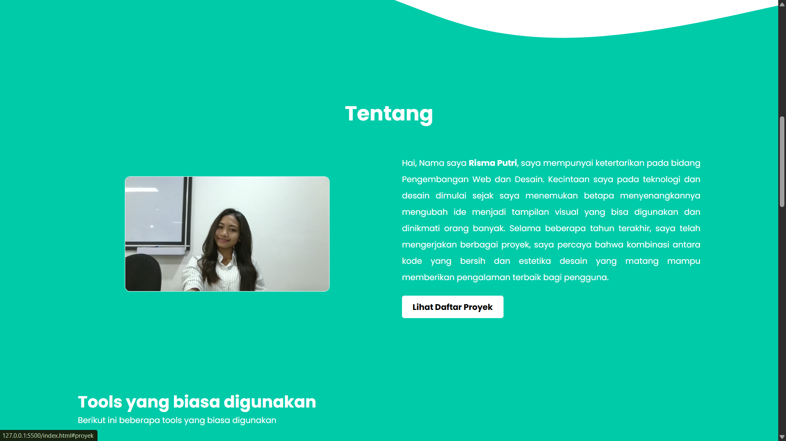

Saya adalah mahasiswa yang mempelajari Ilmu Komputer di Universitas pendidikan nasional. Saya memiliki ketertarikan dalam pengembangan web dan ingin memperdalam pengetahuan dalam HTML dan CSS.
Sejak kecil saya tinggal di Bali, terkhususnya wilayah Denpasar. Sempat beberapa kali pindah karena belum memiliki tempat tinggal, akhirnya pada tahun 2024 kemarin saya sudah memiliki tempat tinggal tetap di wilayah Batubulan, Gianyar. Saya anak pertama dari dua bersaudara, orang tua saya berasal dari satu wilayah yang sama, yakni Karangasem, Bali.
Saya berasal dari Karangasem, Bali, lebih tepatnya wilayah Perasi. Wilayah desa saya cukup kecil, sehingga orang - orang kurang familiar dengan namanya. Tapi, wilayah kami juga memiliki sebuah pantai (yang meskipun jadi perdebatan kepemilikan) yang indah, orang - orang menyebutnya "Virgin Beach" atau Pantai Bias Putih.
Dalam keseharian, saya biasanya menikmati waktu luang saya dengan membaca buku dan mendengarkan lagu. Saya cukup familiar dengan lagu - lagu berbahasa Inggris, Spanyol, Thailand dan Tagalog (Filipina). Dari kebiasaan mendengar lagu ini, saya belajar beberapa frasa dari lagu - lagu yang saya dengar.
Saat ini saya sedang menempuh semester ketiga di jurusan Ilmu Komputer. Saya mengambil kursus tentang dasar-dasar pengembangan web untuk meningkatkan keterampilan saya dalam bidang ini.
Saya mengambil S1 saya di Universitas Pendidikan Nasional atas rekomendasi dari orang tua saya. Di universitas ini saya berkomitmen untuk mendapatkan gelar sarjana saya hingga nanti saya siap terjun ke dunia kerja.
Saya mengambil jurusan Ilmu Komputer dan saat ini saya berada di semester ketiga. Saya sangat menikmati pembelajaran yang saya dapatkan sejauh ini, terutama dalam mata kuliah yang berhubungan dengan pengembangan web dan pemrograman.
Beberapa mata kuliah yang saya pelajari sejauh ini meliputi Kalkulus dan Aljabar Linier, Statistika dan Probabilitas, Dasar - dasar Pemrograman, dan Pemrograman Web. Saya sangat tertarik dengan mata kuliah Pemrograman Web karena sesuai dengan minat saya dalam bidang ini.
Saya juga mengikuti beberapa kursus online untuk memperdalam pengetahuan saya dalam pengembangan web. Salah satu kursus yang saya ikuti adalah "Web Development Bootcamp" di platform Udemy, yang memberikan saya pemahaman praktis tentang HTML, CSS, dan JavaScript.
Anda dapat menghubungi saya melalui email di wirdianthi05@gmail.com.
Atau kunjungi profil Instagram saya di @sirioes.
Berikut ini adalah proyek terakhir yang telah saya kerjakan:
| Jadwal | Waktu | Mata Kuliah | Dosen |
|---|---|---|---|
| Senin | 08:00 - 10:30 | Pengantar Kecerdasaan Buatan | Miss Ika |
| 11:00 - 14:20 | Konfigurasi dan Administrasi Jaringan | Pak Komang | |
| Selasa | 08:00 - 10:30 | Anti Korupsi | Pak Joni |
| 11:00 - 13:30 | Pengantar Kecerdasan Buatan | Miss Ika | |
| Rabu | 08:00 - 10:30 | Pengantar Kecerdasaan Buatan | Miss Ika |
| 11:50 - 15:10 | Pemrograman Web | Pak Huma | |
| Kamis | 08:00 - 10:30 | Pengantar Kecerdasaan Buatan | Miss Ika |
| 11:00 - 13:30 | Konfigurasi dan Administrasi Jaringan | Pak Komang |